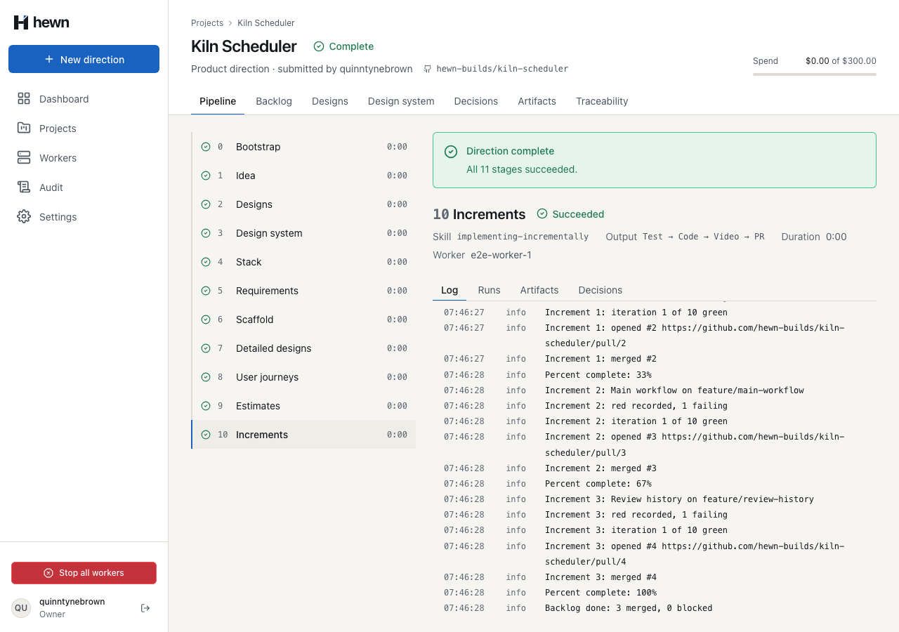
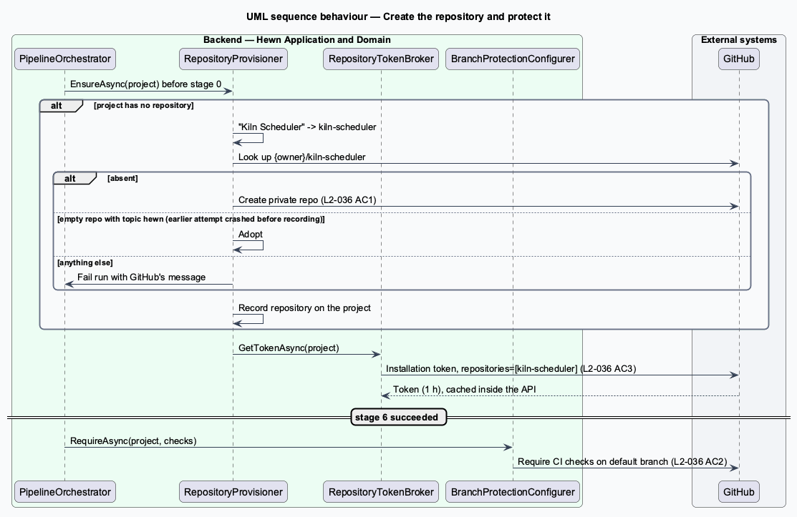
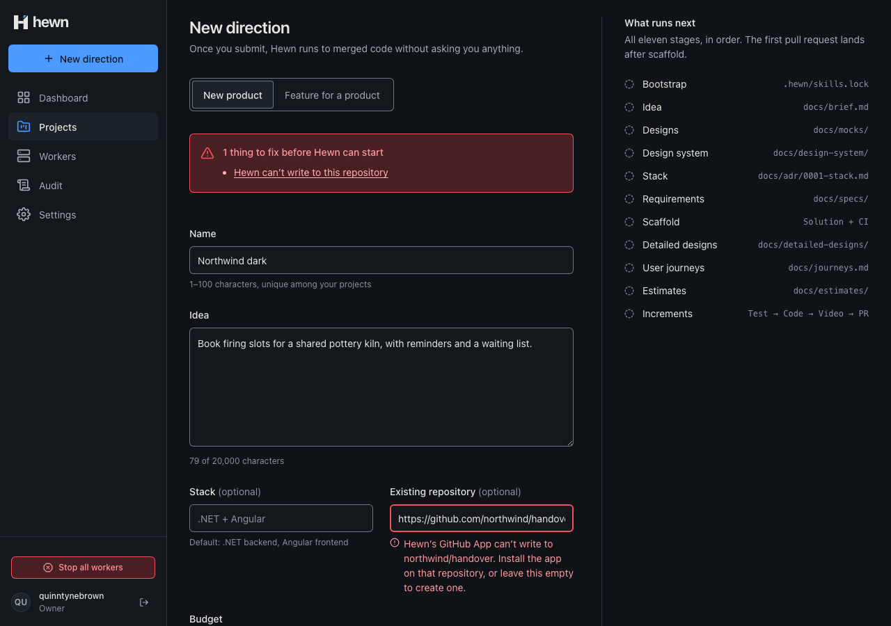
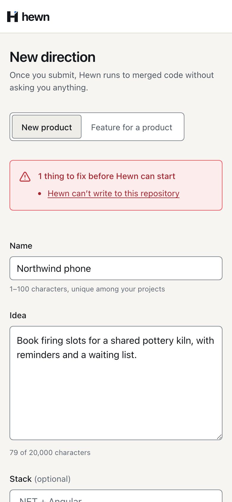

Use an existing repository, or get a protected private one.

private async Task EnsureWritableAsync(RepositoryRef repository, CancellationToken cancellationToken)
{
var access = await gitHub.ProbeAsync(repository.Owner, repository.Name, cancellationToken);
var fullName = $"{repository.Owner}/{repository.Name}";
switch (access)
{
case RepositoryAccess.NotFound:
throw new FieldValidationException(
[new FieldError("repositoryUrl", $"Hewn can’t find {fullName} on GitHub. Check the URL, or leave this empty to create one.", "Hewn can’t find this repository")],
"repository_not_found");
case RepositoryAccess.NoAccess:
throw new FieldValidationException(
[new FieldError("repositoryUrl", $"Hewn’s GitHub App can’t write to {fullName}. Install the app on that repository, or leave this empty to create one.", "Hewn can’t write to this repository")],
"repository_not_writable");
}
}

GET /api/fakes/github/hewn-builds/kiln-scheduler
{
"owner": "hewn-builds",
"name": "kiln-scheduler",
"private": true,
"topics": [
"hewn"
],
"requiredChecks": [
"backend",
"frontend",
"e2e"
]
}
using var lookup = Request(HttpMethod.Get, $"repos/{owner}/{repo}/installation", jwt);
using var installationResponse = await http.SendAsync(lookup, cancellationToken);
if (installationResponse.StatusCode == HttpStatusCode.NotFound)
{
return null;
}
installationResponse.EnsureSuccessStatusCode();
var installation = await installationResponse.Content.ReadFromJsonAsync<Installation>(cancellationToken);
using var exchange = Request(HttpMethod.Post, $"app/installations/{installation!.Id}/access_tokens", jwt);
exchange.Content = JsonContent.Create(new { repositories = new[] { repo } });
using var tokenResponse = await http.SendAsync(exchange, cancellationToken);
tokenResponse.EnsureSuccessStatusCode();
var token = await tokenResponse.Content.ReadFromJsonAsync<AccessToken>(cancellationToken);
return token!.Token;
using var exchange = Request(HttpMethod.Post, $"app/installations/{installation.Id}/access_tokens", jwt);
using var tokenResponse = await http.SendAsync(exchange, cancellationToken);
tokenResponse.EnsureSuccessStatusCode();
return (await tokenResponse.Content.ReadFromJsonAsync<AccessToken>(cancellationToken))!.Token;
using var exchange = Request(HttpMethod.Post, $"app/installations/{installation.Id}/access_tokens", jwt);
exchange.Content = JsonContent.Create(new { permissions = new { administration = "write" } });
using var tokenResponse = await http.SendAsync(exchange, cancellationToken);
tokenResponse.EnsureSuccessStatusCode();
return (await tokenResponse.Content.ReadFromJsonAsync<AccessToken>(cancellationToken))!.Token;
}
var token = await client.GetAccountTokenAsync(owner, cancellationToken)
?? throw new GitHubException($"Hewn's GitHub App is not installed on {owner}, so it cannot create {owner}/{name}.");
using var created = await client.SendAsRepositoryAsync(
HttpMethod.Post, $"orgs/{owner}/repos", token, cancellationToken,
new { name, description, @private = true, auto_init = true });
Ensure(created, $"create {owner}/{name}");
// From here on, only a token limited to the new repository (L2-036 AC3).
var repositoryToken = await RepositoryTokenAsync(owner, name, cancellationToken);
using var topics = await client.SendAsRepositoryAsync(
HttpMethod.Put, $"repos/{owner}/{name}/topics", repositoryToken, cancellationToken, new { names = new[] { "hewn" } });
Ensure(topics, $"tag {owner}/{name}");
return new GitHubRepositoryInfo(owner, name, true, ["hewn"], 1);
}
public sealed class ProtectDefaultBranchHandler(IAppDbContext db, LeaseService leases, IGitHubRepositories gitHub, TimeProvider clock)
: IRequestHandler<ProtectDefaultBranchCommand>
{
public async Task Handle(ProtectDefaultBranchCommand command, CancellationToken cancellationToken)
{
var run = await leases.FenceAsync(command.RunId, command.WorkerId, command.Epoch, cancellationToken);
if (await MutationLedger.FindAsync(db, command.IdempotencyKey, cancellationToken) is not null)
{
return;
}
CommitPolicy.EnsureProtectAllowed(run.Stage);
var project = await RunProject.RequireRepositoryAsync(db, run, cancellationToken);
await gitHub.ProtectDefaultBranchAsync(project.RepositoryOwner!, project.RepositoryName!, command.Checks, cancellationToken);
await MutationLedger.RecordAsync(db, run, command.IdempotencyKey, "protect_branch", new { checks = command.Checks }, clock, cancellationToken);
}
public async Task Creating_a_repository_uses_a_token_that_can_only_administer_repositories_and_then_one_for_the_new_repository()
{
var (repositories, _, gitHub) = Create();
await repositories.CreatePrivateAsync("acme", "shop", "A shop", CancellationToken.None);
var calls = gitHub.RepositoryCalls().ToList();
Assert.Equal(("POST orgs/acme/repos", """{"permissions":{"administration":"write"}}"""), calls[0]);
Assert.Equal(("PUT repos/acme/shop/topics", OnlyShop), calls[1]);
Assert.Equal(2, calls.Count);
}
// Stage 0 creates a private repository; the link appears without a reload.
const repository = `hewn-builds/${name.toLowerCase().replace(/[^a-z0-9]+/g, '-')}`;
await expect(project.repository).toHaveText(repository, { timeout: 60_000 });
const created = await project.gitHubRepository(repository);
expect(created.private).toBe(true);
expect(created.topics).toContain('hewn');
// Stage 6 left the default branch requiring the scaffold's CI checks.
expect((await project.gitHubRepository(repository)).requiredChecks).toEqual(['backend', 'frontend', 'e2e']);

